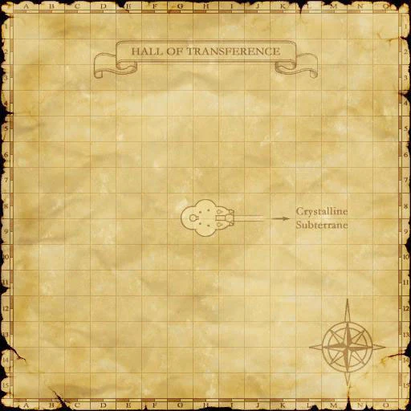
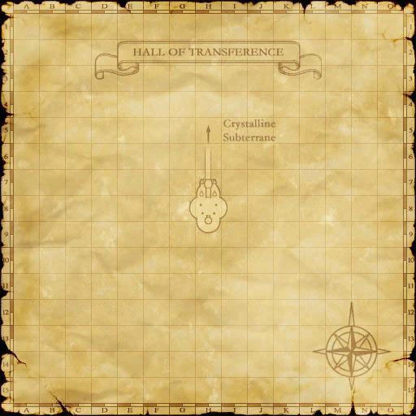

Description
Hall of Transference is a dungeon in Promyvion.
Map

Involved in Quests / Missions
| Quest / Mission | Type | Starter | Location |
|---|---|---|---|
| Teleportation to Tu'Lia Guide | Mini-quest | — | — |
Maps

Story walkthroughs in this area
| Story | Mission / quest |
|---|---|
| CoP 1-2 | Below the Arks |
References
External references describe their own server or retail rules. Documented Zenith changes take precedence.
Map credits: Map 1 — HorizonXI Wiki · Map 2 — HorizonXI Wiki. Original game maps © SQUARE ENIX; redrawn maps retain the credited authorship and license.


Additional level-75 reference
Teleportation from the Hall of Transference to Ru'Aun Gardens
In order to be able to teleport to Ru'Aun Gardens from the Hall of Transference, you will first need to complete a set of requirements. These requirements include
- Access to Tu'Lia
- Acquisition of the key item from your race's tower in The Garden of Ru'Hmet (this requires you to be on or past Chains of Promathia 8-3)
- A Clear Chip to be placed into the right-hand Large Apparatus located within the Hall of Transference
Acquisition of the key item from your race's tower in The Garden of Ru'Hmet grants you the title of "Warrior of the Crystal." This title is required for registering your data (see below) in Ru'Aun Gardens - data that permits you to use the Large Apparatuses and green teleporters. You can change your title to "Warrior of the Crystal" for 300 gil by speaking to Aligi-Kufongi located at (H-9) on the second floor of Tavnazian Safehold.
Registering Data
Set your title to "Warrior of the Crystal", and travel to Ru'Aun Gardens. There are two green teleporters with hexagonal shapes floating above them, one located at (G-9) and the other at (I-9). Step onto one of these green teleporters to register your data (you only need to register your data once). Once registration is complete, you will receive the text
"Your d...ta wil... be ...gistered."
"Regis... ...omplete."
Teleporting
Once your data is registered, you can teleport from the Hall of Transference to Ru'Aun Gardens.
To teleport to Ru'Aun Gardens from the Hall of Transference, you will need to purchase a Clear Chip from any of the goblins located in the cities. Place this chip into the right-hand Large Apparatuses located in any of the Halls of Transference so that it may fully function. Then, step onto the pad in front of the Large Apparatus to teleport to Ru'Aun Gardens.
Notes: So far, the only title that seems to register data is "Warrior of the Crystal." It has been said that using a Large Apparatus to teleport to Ru'Aun Gardens may result in the break of the Clear Chip, which will require another to be placed into that Large Apparatus to use it again.
Adapted from Eden Wiki: Hall of Transference · Contributors and history · CC BY-SA 4.0. Revision 18027. Layout, links and optional background text adapted for Zenith.